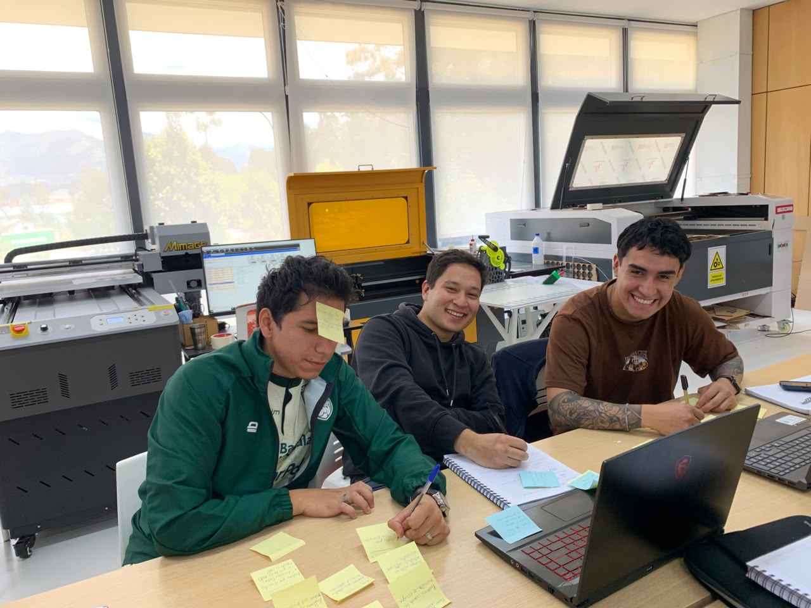

El Origen
Documentación del proceso de investigación y desarrollo (I+D) en el FabLab. Buscamos crear soluciones tangibles mediante la fabricación digital y optimización de procesos.
Nuestro enfoque actual: Un ecosistema de riego inteligente que lee su entorno y dosifica el agua con precisión, uniendo hardware, software y naturaleza.

El Equipo
Registro Semanal
[Próximamente]
S-02